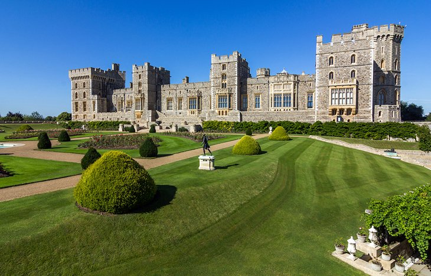
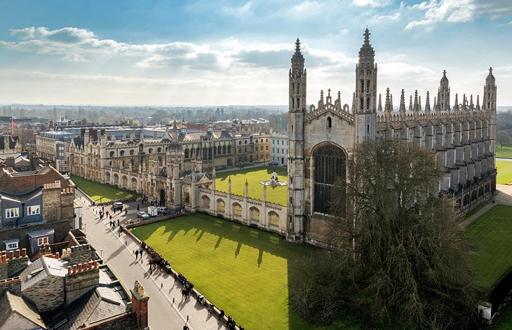

Interesting places to visit
London

While it's possible to plan a trip to the UK without actually visiting London, it's certainly not a
recommendation I'd make. I typically begin my UK visits by spending a few days in the nation's sprawling
capital while getting over my jet lag before venturing out to my planned final destination (or
destinations).
There are plenty of attractions to keep you busy. Want to learn more about the UK's rich history? You're
literally spoiled for choice here as London boasts more than 200 world-class museums and art galleries to
explore.
In the City of London, the heart of the old Roman city, you'll find evidence of pretty much every period
in history ever since. Some of the top attractions in London are located here, including the Tower of
London.
Located beside the spectacular Tower Bridge on the banks of the River Thames, this former palace and
prison includes highlights such as the iconic 1,000-year-old White Tower, with its fascinating displays
of armor and weaponry, and the Jewel House, home to the Crown Jewels. I always make a return visit at
sunrise or sunset to grab an iconic photo of the Tower of London framed by Tower Bridge.
If you're a fan of Britain's Royal Family, you'll want to head to Buckingham Palace, London's Royal home
since Queen Victoria's reign. Here, you can enjoy the colorful pomp of the Changing of the Guard or even
take a tour of the Palace's State Rooms. Spaces are limited, so be sure to book in advance as they're
only open for a few weeks each year.
From here you can wander along the Thames to the city's Whitehall Road area. Here you'll find Big Ben
and
the Parliament Buildings, as well as Westminster Abbey, the scene of many a royal wedding.
Another area to visit in London is South Kensington, home to the city's best museums, including the
Victoria and Albert Museum and the Natural History Museum, as well as the famous Harrods department
store. Also check out Trafalgar Square, home to the iconic Nelson's Column and the National Portrait
Gallery.
And be sure to make the most of London's excellent transport system. Whether you go by bus or by
underground, the system's now so good that you can simply use a debit or credit card to tap in and out
as
you go. It really is very easy, and once you've mastered that famous map of the city's "Tube" network
you'll be traveling like a Londoner.
Royal Windsor

The historic town of Windsor, conveniently located a short train ride west of Central London, offers
plenty of fun attractions for tourists. In addition to its lovely Thames-side setting and the many
medieval half-timbered buildings along its quaint old cobblestone laneways, it's also home to spectacular
Windsor Castle, the most famous of the UK's royal castles.
This grand old castle has served as the summer residence of British royalty for more than a millennium.
It was started by William the Conqueror in 1078 and is the world's largest inhabited castle. Highlights
include the splendid State Apartments containing the Queen's Gallery and dining hall, each with
magnificently painted ceilings and woodcarvings, and St. George's Chapel, famous as the home of the
Knights and Ladies of the ancient Order of the Garter.
When you've had your fill of these historic buildings, be sure to also spend time exploring the castle's
large and beautiful grounds, almost 10 kilometers long. You'll enjoy some truly memorable panoramic views
over Windsor and its castle, and a number of picnic areas, some with barbecue grills, are available if
you want to stop awhile.
Traveling with kids? Another area attraction worth visiting is Legoland Windsor. This fun family resort,
set on 150 acres of parkland and just a short bus ride from Windsor town center, even boats a modern
Lego-themed hotel if you're looking to make a weekend of it.
Also worth seeing is Royal Ascot, the UK's most famous horse-racing venue. While you might want to
try to
time your trip to coincide with the Royal Meeting held each June, you'll find yourself fighting often
huge crowds, all dressed to the nines, here for what is after all one of the most important events on the
country's social calendar.
The University Towns of Cambridge Oxford

The UK has long been a center of learning, with two of its most famous university towns also ranking
highly as tourist destinations. An easy commute north of London and just 128 kilometers apart, Cambridge
and Oxford have for centuries been rivals for the title of the country's top academic establishment, a
rivalry celebrated during the famous rowing event, The Boat Race, which takes place each spring on the
River Thames.
Despite this generally good-spirited rivalry, each location offers plenty of attractions to make them
worthwhile additions to your UK travel itinerary. Highlights of a visit to Cambridge include the chance
to wander the UK's largest collection of preserved historic buildings, many of them located within an
easy walk of Cambridge University's 31 colleges, the oldest of which was founded in 1284.
In addition to touring the stunning college grounds (only a handful of the university's buildings offer
tours), you should also take a punt along the River Cam. This must-do activity is something of a
Cambridge ritual, and chances are you'll even be "punted" along by a university student willing to share
a little of their college experiences.
Oxford University's 38 colleges are equally fun to explore. These historic old places of
learning are
each set around a quadrangle and several inner courtyards along with
chapels, dining halls, libraries,
and student residences, some of which offer unique tourist
accommodation packages, too. Like most UK
tourist sites, they do get extremely busy in summer so be sure to
book your visit in advance if you can
to avoid disappointment.